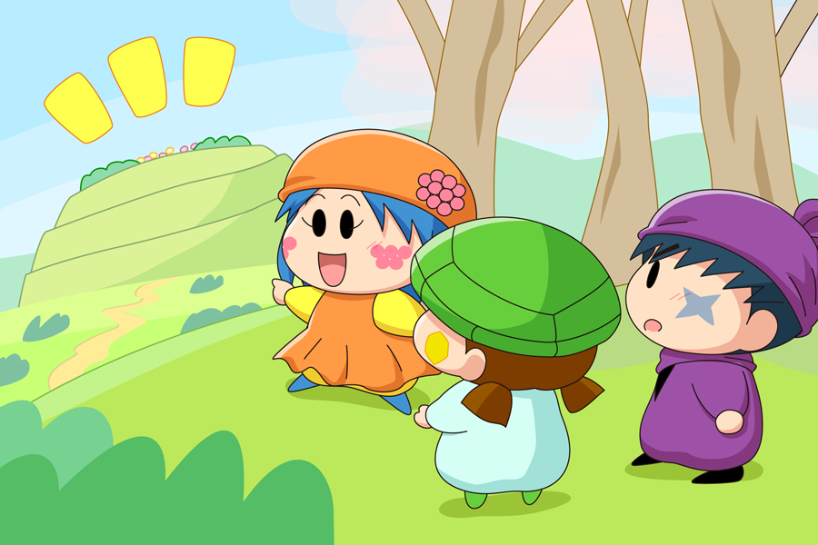

リーネ「じゃあ、私と勝負したら何とかしてあげる！」
サスケ「リーネと勝負！？」
カメリ「ほんとうに何とかしてくれるの～～？」
リーネ「もちろんよ」
（危なかったわ・・。このまま行ってしまったら私の出番が１回で終わるところだったわ）
サスケ「勝負って何をするんだぜ？」
リーネ「そ、そうね・・・。
じゃああの丘の上に見えるお花畑に先に着いた方が勝ちってことにしましょ。
ただし、魔法やうちわを使ったらだめよ」
リーネは少し離れたところに見える、小高い丘の頂上を指さしました。
サスケとカメリの目にも、丘の上にきれいなお花が咲いているのが見えました。
サスケ「よーし、オイラたち絶対に勝ってミオリさんを喜ばせようぜ」
カメリ「うん～。私も～がんばる～」
リーネ「それじゃあ、位置について・・・よ～い、ドン！」
３人が丘へ向けて走り出しました。
が、カメリは早くも２人に置いていかれています。
カメリ「サスケくん～、私と一緒だと負けちゃうよ～。
私のことはかまわずに～サスケくんは先に行って～」
サスケ「オイラ、カメリを置いていくなんてできないぜ・・・」
カメリ「後で必ず追いつくから・・・。
サスケくんが～先に頂上へ行って～、ミオリさんを～喜ばせてあげて～」
サスケ「わ、わかったぜ」
サスケは前へ振り返り、サスケの前を走っているリーネを追いかけました。
和やかな雰囲気から一転して、なぜかリーネとのバトル展開へとなりました(^◇^;)。二人の絆を深めるにはやっぱりバトル展開がないとなぁと思い・・・（強引）。
カメリは早速置いていかれてしまったので、リーネとサスケの直接対決ですね。頼りないサスケはリーネに勝てるのか、次回をこうご期待！？
(2015/5/6)